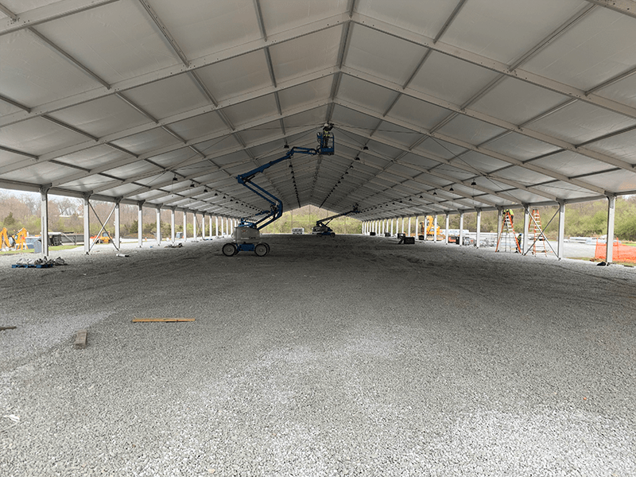
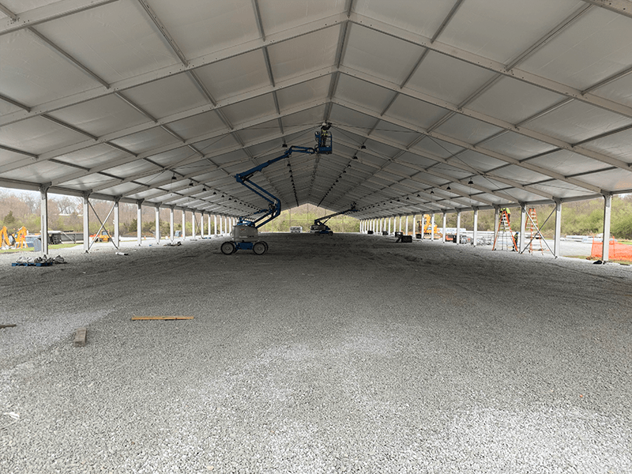

NYC Borough-Based Jails
Location: Manhattan, Brooklyn, The Bronx, Queens
Client: NYC Department of Design and Construction
Role: Designer / Senior Justice Designer / SME
Firms: AECOM (2019-2022), Urbahn Architects (2024)
Status: In Progress
Description
The Borough-Based Jails program replaces the Rikers Island jail complex with four new detention facilities integrated into NYC neighborhoods. This multi-billion dollar initiative represents a fundamental rethinking of detention design—prioritizing rehabilitation, natural light, connection to community, and humane conditions while meeting stringent security requirements.
Project Contribution
- Led conceptual design using Revit for high-rise detention towers
- Designed outdoor recreation areas balancing security (attack-rated mesh, no-climb barriers) with therapeutic outdoor access
- Created custom Revit families for security-specific elements not available from manufacturers
- Developed construction document details for security-compliant wall assemblies
- Coordinated with NYC agencies on zoning, fire regulations, and building codes
- Coached and mentored team members on justice design principles
Key Features
- Transitional housing units (96 beds per floor)
- Rooftop recreation with natural daylight
- Public arcade at street level integrating facility with neighborhood
- Facade studies balancing security mesh with dignified appearance

Baltimore Therapeutic Treatment Center
Location: Baltimore, Maryland
Client: State of Maryland
Role: Justice Designer
Firm: STV
Timeline: March 2023 - November 2023
Description
A behavioral health treatment facility designed to serve individuals requiring secure therapeutic care. The project demanded careful balance between clinical treatment needs, security requirements, and environments that support mental health recovery.
Project Contribution
- Established Revit BIM environment for full project team coordination
- Led creation of custom Revit families for cells, doors, and security partitions
- Implemented AI and Power BI automation for Room Data Sheets across all disciplines
- Developed automated NSF calculations for consistent area analysis
- Coordinated structural planning between trades
- Mentored architect team on justice design principles
Macomb County Central Intake & Assessment Center
Location: Macomb County, Michigan
Client: Macomb County
Role: Senior Justice Designer
Firm: STV (with PARTNERS in Architecture)
Timeline: October 2023 - March 2024
Description
Expansion design for the Macomb County Jail focusing on mental health treatment capacity and modern intake/assessment operations. The facility addresses growing needs for behavioral health services within the justice system.
Project Contribution
- Led expansion design focusing on mental health and occupancy requirements
- Spearheaded Revit BIM implementation from Schematic Design through Design Development
- Directed creation of custom components for unique architectural elements
- Designed therapeutic environments through innovative layout strategies
- Delivered stakeholder presentations communicating design concepts and progress

Morris County Courthouse
Location: Morris County, New Jersey
Client: Morris County
Role: Job Captain
Firm: AECOM
Timeline: September 2022 - March 2023
Description
Design-Build courthouse project requiring coordination of civic architecture with justice facility security and operational requirements.
Project Contribution
- Guided project from Schematic Design toward Design Development completion
- Created detailed floor plans and renderings in Revit
- Integrated sustainable design principles with practical courthouse operations
- Facilitated client feedback integration across design phases
Justice Facilities for Native American Tribes
Location: Various tribal lands
Role: Revit & 3D Design
Firm: Peter Krasnow Architect PLLC
Timeline: August 2016 - September 2019
Description
Justice facilities designed specifically for Native American tribal communities, requiring deep understanding of tribal court systems, cultural practices, and community integration alongside standard security requirements.
Project Contribution
- Strategic partnership with Peter Krasnow, applying justice design philosophy
- Engaged in detailed Revit modeling for conceptual and schematic phases
- Created 3D visualizations for stakeholder presentations to tribal leaders, contractors, and officials
- Implementation of culturally-specific design requirements and tribal justice systems
Alternate Care Facility (COVID-19 Response)
Location: SUNY Old Westbury, Long Island, NY
Client: US Army Corps of Engineers
Role: Designer / On-Site Lead
Firm: AECOM
Timeline: March 2020 - July 2020
Description
Emergency conversion of an athletic complex into a 1,024-bed non-acute COVID-19 treatment facility, completed in 28 days with first beds delivered 12 hours ahead of schedule.
Project Contribution
- Performed rapid evaluations for Design-Build conversion
- Served as primary on-site lead for ADA-compliant bathroom/shower installations
- Coordinated with remote architects while supervising field crews
- Produced daily field reports ensuring plans matched actual conditions
 
